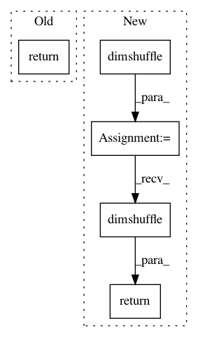

6fd2d43bfeb1195e68693a66e767464835e40abf,keras/backend/theano_backend.py,,batch_normalization,#Any#Any#Any#Any#Any#Any#,432
Before Change
use_cudnn = ndim < 5 and (dev.startswith("cuda") or dev.startswith("gpu"))
if use_cudnn:
try:
return theano.sandbox.cuda.dnn.dnn_batch_normalization_test(x, gamma, beta, mean, var,
"spatial", epsilon)
except AttributeError:
pass
return T.nnet.bn.batch_normalization(x, gamma, beta, mean, sqrt(var + epsilon),
mode="high_mem")
After Change
mean = mean.dimshuffle(shuffle_pattern)
var = var.dimshuffle(shuffle_pattern)
beta = beta.dimshuffle(shuffle_pattern)
gamma = gamma.dimshuffle(shuffle_pattern)
normed = theano.sandbox.cuda.dnn.dnn_batch_normalization_test(x, gamma, beta, mean, var,
"spatial", epsilon)
if axis != 1:
normed = normed.dimshuffle(shuffle_pattern)
return normed
except AttributeError:
pass
except ValueError:
pass
In pattern: SUPERPATTERN
Frequency: 3
Non-data size: 5
Instances
Project Name: keras-team/keras
Commit Name: 6fd2d43bfeb1195e68693a66e767464835e40abf
Time: 2016-10-28
Author: alois.gruson@niland.io
File Name: keras/backend/theano_backend.py
Class Name:
Method Name: batch_normalization
Project Name: keras-team/keras
Commit Name: 243d4737d1caaf7d586abc69addef16a08276231
Time: 2015-07-03
Author: francois.chollet@gmail.com
File Name: keras/layers/convolutional.py
Class Name: MaxPooling1D
Method Name: get_output
Project Name: keras-team/keras
Commit Name: 243d4737d1caaf7d586abc69addef16a08276231
Time: 2015-07-03
Author: francois.chollet@gmail.com
File Name: keras/layers/convolutional.py
Class Name: Convolution1D
Method Name: get_output